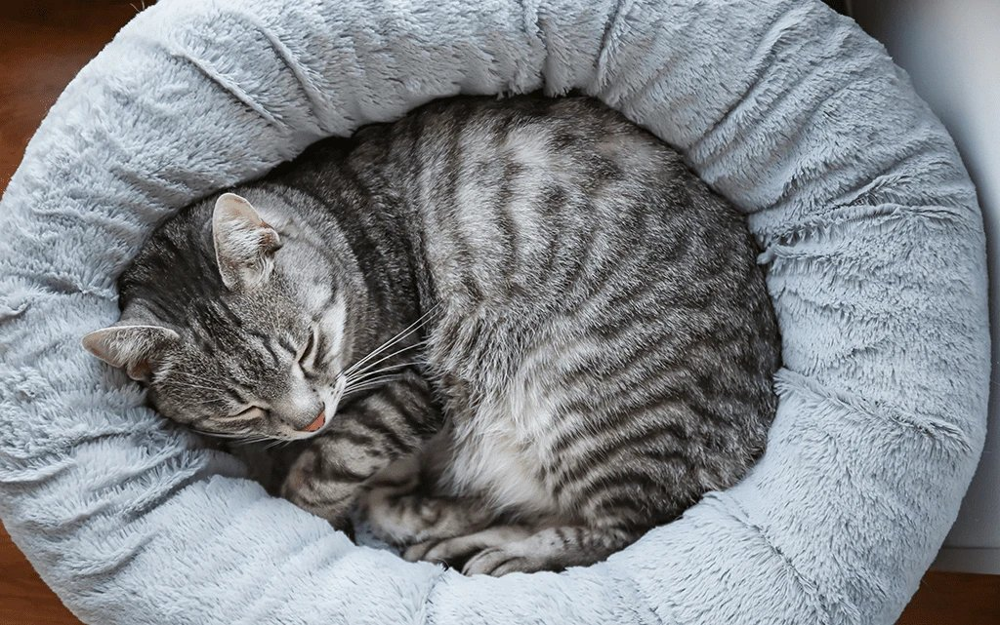

Как подготовить дом к появлению кошки: чек-лист для будущего хозяина
22.04.2026

Вы решили взять кошку из приюта? Отлично! Чтобы питомец чувствовал себя спокойно и безопасно
с первого дня, достаточно выполнить несколько простых шагов. Мы собрали главное в один короткий список.
1. Уберите провода и мелкие предметы.
Кошки любят грызть и играть с тем, что плохо лежит.
Спрячьте зарядные устройства, резинки, фольгу, нитки.
2. Организуйте личное пространство.
Поставьте лежанку или домик в тихом углу - у кошки должно быть место, где её никто не трогает.
3. Купите миски и лоток.
Возьмите керамику или нержавейку (пластик часто вызывает аллергию).
Лоток поставьте в уединённом месте, подальше от еды и шума.
4. Безопасные растения.
Уберите лилии, плющ,
диффенбахию - они ядовиты для кошек. Лучше посадите кошачью мяту или овёс.
5. Закройте окна.
Даже самые
спокойные кошки могут выпрыгнуть за птицей или насекомым. Установите сетки-антикошка или не открывайте
окна настежь.
6. Подготовьте когтеточку.
Если не хотите драный диван - поставьте столбик-когтеточку
или настенный ковролин.
7. Первые дни без стресса.
Не навязывайтесь, дайте кошке осмотреться.
Разговаривайте тихо, предложите лакомство, когда сама подойдёт.
Если всё сделано правильно - уже через пару дней кошка начнёт тереться о ноги и мурчать. А мы всегда
поможем с выбором питомца и ответим на вопросы после усыновления.